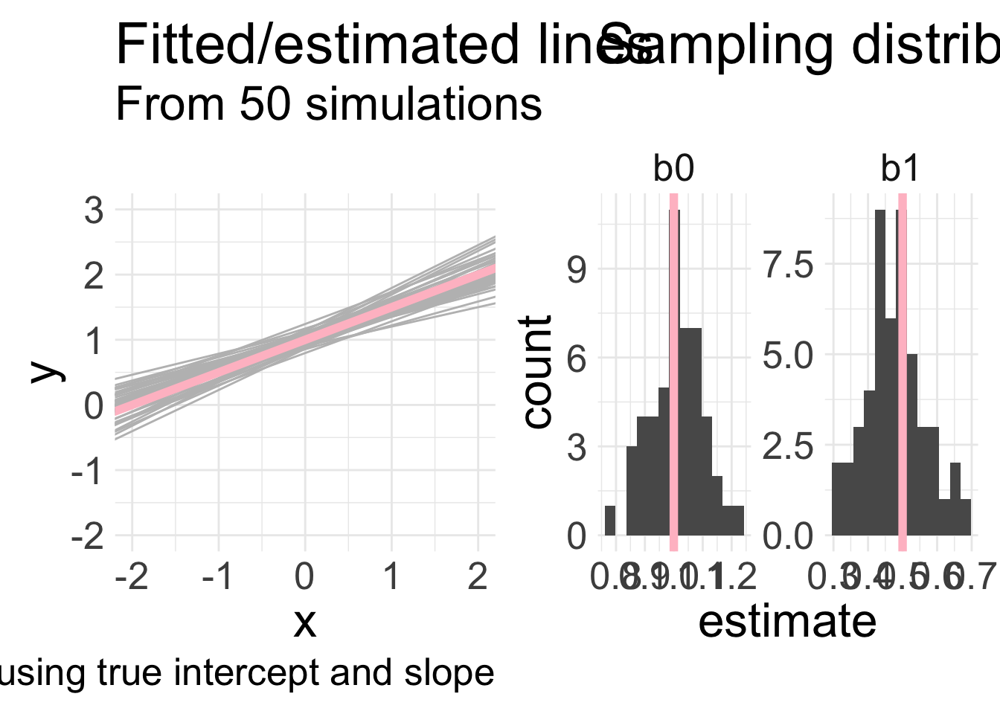
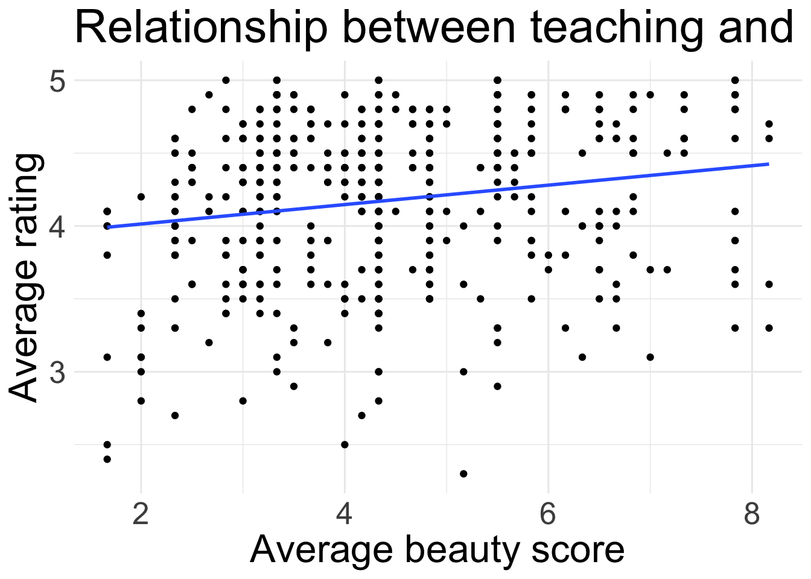
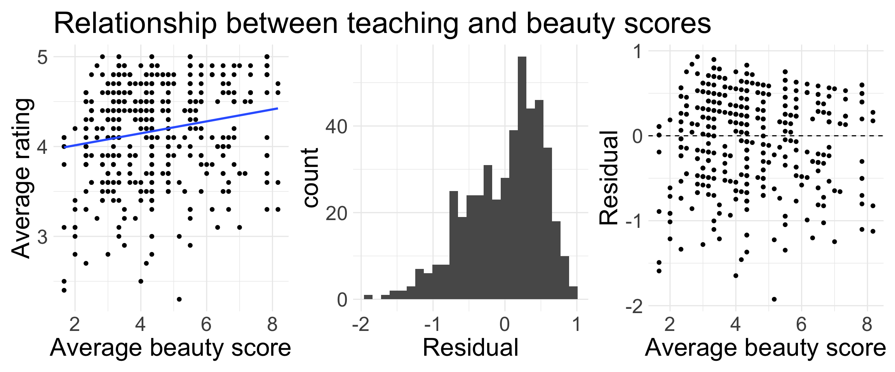

Inference in SLR
Housekeeping
Midterm 2 is one week from today (in class)
Content through this week is fair game for midterm
Practice problems to be released over the weekend
Recap
- Learned how to interpret slope and intercept of fitted model
- \(b_0\) is estimate of \(\hat{y}\) when \(x=0\)
- \(b_{1}\) is expected change in \(\hat{y}\) for a one unit increase in \(x\)
- When explanatory \(x\) is categorical, we have a slightly more nuanced interpretation
- Coefficient of determination \(R^2\) assesses strength of linear model fit
Variability of coefficient estimates
Remember, a linear regression is fit using a sample of data
Different samples from the same population will yield different point estimates of \((b_{0}, b_{1})\)
I will generate 30 data points under the following model: \(y = 1 + 0.5x+\epsilon\)
- How? Randomly generate some \(x\) and \(\epsilon\) values and then plug into model to get corresponding \(y\)
Fit SLR to these \((x,y)\) data, and obtain estimates \((b_{0}, b_{1})\)
Repeat this 50 times
Variability of coefficient estimates
Inference for SLR
What are we interested in?
Remember: we fit SLR to understand how \(x\) is (linearly) related to \(y\):
\[ y = \beta_{0} + \beta_{1} x + \epsilon \]
What would a value of \(\beta_{1} = 0\) mean?
- If \(\beta_{1} = 0\), then the effect of \(x\) disappears and there is in fact no linear relationship between \(x\) and \(y\)
We don’t know \(\beta_{1}\), so we can perform inference for it!
- Can conduct HTs and obtain CIs using our best guess \(b_{1}\)
Running example: evals data
Data on 463 courses at UT Austin were obtained to answer the question: “What factors explain differences in instructor teaching evaluation scores?”
One hypothesis is that attractiveness of a teacher influences their teaching evaluations
We will look at the variables:
score: course instructor’s average teaching score, where average is calculated from all students in that course. Scores ranged from 1-5, with 1 being lowest.bty_avg: course instructor’s average “beauty” score, where average is calculated from six student evaluations of “beauty”. Scores ranged from 1-10, with 1 being lowest.
Write out our linear regression model
Teaching evaluations data
`geom_smooth()` using formula = 'y ~ x'
Does this line really have a non-zero slope?
Hypothesis test for slope
\(H_{0}: \beta_{1} = 0\): the true linear model has slope zero.
- In context: there is no linear relationship between an instructor’s average beauty score and their average teaching evaluation score.
\(H_{A}: \beta_{1} \neq 0\): the true linear model has a non-zero slope.
- In context: there is a linear relationship between an average instructor’s beauty score and average teaching evaluation score.
To assess, we do what we usually do:
Check if methods are appropriate
If so: obtain an estimate, identify/estimate standard error of the estimate, find an appropriate test statistic, and calculate p-value
The output from
lm()actually does all of #2 for us, but we will see how the test statistic and p-value are calculated!
Teaching evaluations: model assessment
We fit the model in R, and obtain the following plots.
Are all conditions of LINE met?
`geom_smooth()` using formula = 'y ~ x'
Looking at lm() output
library(broom)
eval_mod <- lm(score ~ bty_avg, data = evals)
eval_mod |>
tidy()| term | estimate | std.error | statistic | p.value |
|---|---|---|---|---|
| (Intercept) | 3.880 | 0.076 | 50.961 | 0.00000 |
| bty_avg | 0.067 | 0.016 | 4.090 | 0.00005 |
Assuming the linear model is appropriate, interpret the coefficients!
Intercept: an instructor with an average beauty score of 0 has an estimated evaluation score of 3.88
Slope: for every one point increase in average beauty score an instructor receives, their evaluation score is estimated to increase by 0.067 points
Looking at lm() output
| term | estimate | std.error | statistic | p.value |
|---|---|---|---|---|
| (Intercept) | 3.880 | 0.076 | 50.961 | 0.00000 |
| bty_avg | 0.067 | 0.016 | 4.090 | 0.00005 |
estimate: the observed point estimate (\(b_{0}\) or \(b_{1}\))std.error: the estimated standard error of the estimate
statistic: the value of the test statisticp.value: p-value associated with the two-sided alternative \(H_{A}: \beta_{1} \neq 0\)
- Let’s confirm the test statistic calculation:
\[ t = \frac{\text{observed} - \text{null}}{\text{SE}_{0}} =\frac{b_{1,obs} - \beta_{1, 0}}{\widehat{\text{SE}}_{0}} = \frac{0.066637 - 0}{0.0162912} = 4.0903823 \sim t_{df} \]
where \(df = n-2\)
p-value and conclusion
| term | estimate | std.error | statistic | p.value |
|---|---|---|---|---|
| (Intercept) | 3.880 | 0.076 | 50.961 | 0.00000 |
| bty_avg | 0.067 | 0.016 | 4.090 | 0.00005 |
Let’s confirm the p-value calculation:
\[\text{p-value} = \text{Pr}(T \geq 4.09) + \text{Pr}(T \leq -4.09)\] where \(T \sim t_{461}\)
- Write out the code you would use to calculate the p-value.
2 * (1 - pt(4.09, df = 461))= 0.00005082731- Assuming the LINE conditions are met: since our p-value 0.00005082731 is extremely small, we would reject \(H_{0}\) at any reasonable significant level. Thus, the data provide convincing evidence that there is a linear relationship between instructor’s beauty score and evaluation score.
Different \(H_{A}\)
| term | estimate | std.error | statistic | p.value |
|---|---|---|---|---|
| (Intercept) | 3.880 | 0.076 | 50.961 | 0.00000 |
| bty_avg | 0.067 | 0.016 | 4.090 | 0.00005 |
Write code for your p-value if your alternative was \(H_{A}: \beta_{1} > 0\). What would your conclusion be?
\(\text{Pr}(T \geq 4.09)\) =
1-pt(4.09, 461)= 0.00002541365The data provide convincing evidence that there is a positive relationship between instructor’s beauty score and evaluation score.
Write code for your p-value if your alternative was \(H_{A}: \beta_{1} < 0\). What would your conclusion be?
\(\text{Pr}(T \leq 4.09)\) =
pt(4.09, 461)= 0.9999745The data do not provide convincing evidence that there is a negative relationship between instructor’s beauty score and evaluation score.
Confidence intervals
| term | estimate | std.error | statistic | p.value |
|---|---|---|---|---|
| (Intercept) | 3.880 | 0.076 | 50.961 | 0.00000 |
| bty_avg | 0.067 | 0.016 | 4.090 | 0.00005 |
We can also construct confidence intervals using the output from lm()! Remember:
\[ \text{CI} = \text{point est.} \pm \text{critical value} \times \widehat{\text{SE}} \]
Critical value also comes from \(t_{n-2}\) distribution
Suppose we want a 95% confidence intervals for \(\beta_{1}\):
What code would you use to obtain critical value? Then set up your CI!
qt(0.975, 461)= 1.97
\[\text{95% CI}: 0.067 \pm 1.97 \times 0.016 = (0.035, 0.099)\]
Remarks
Note: for \(\beta_{1}\), the null hypothesis is always of the form \(H_{0}: \beta_{1} = 0\)
LINE conditions must be met for underlying mathematical and probability theory to hold here! If not met, interpret and perform inference with caution
Here, the Independence and Normality conditions did not seem to be met
- Take STAT 412 or other course to learn how to incorporate dependencies between observations!
So what can we say?
The results suggested by our inference should be viewed as preliminary, and not conclusive
Further investigation is certainly warranted!
Checking LINE can be very subjective, but that’s how real-world analysis will be!